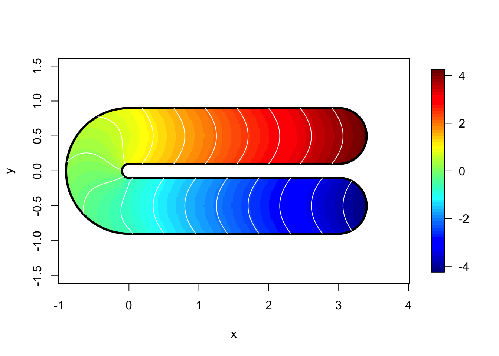
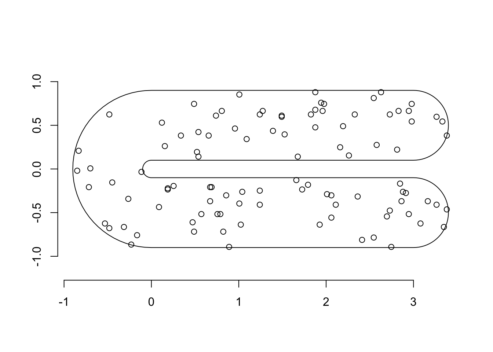
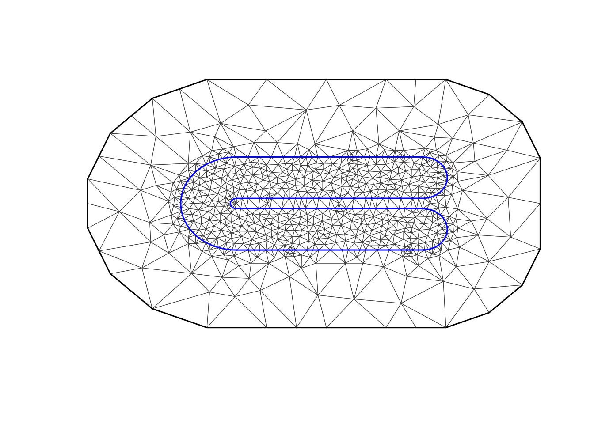
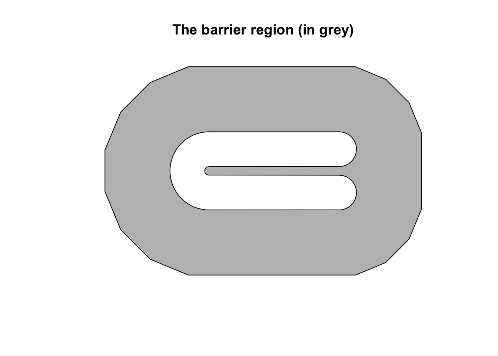
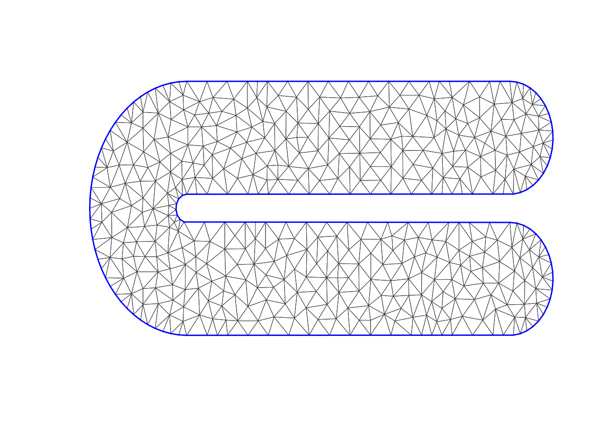
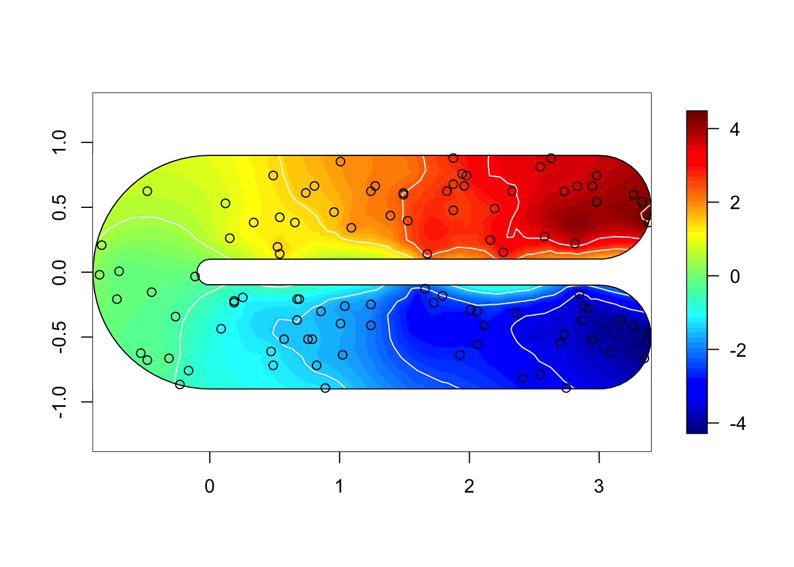
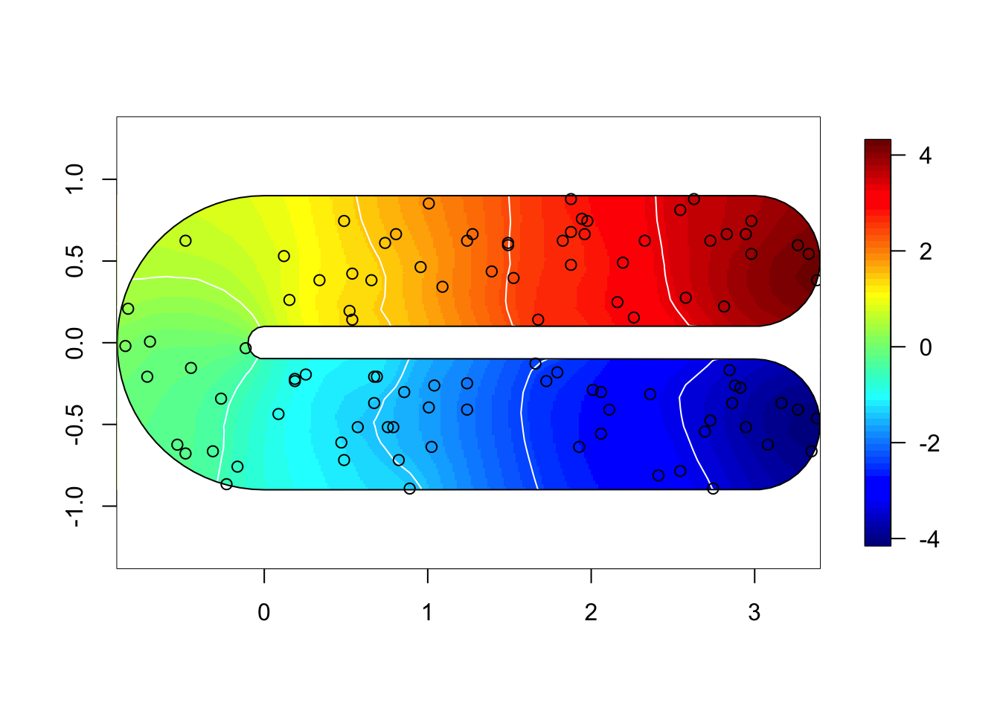
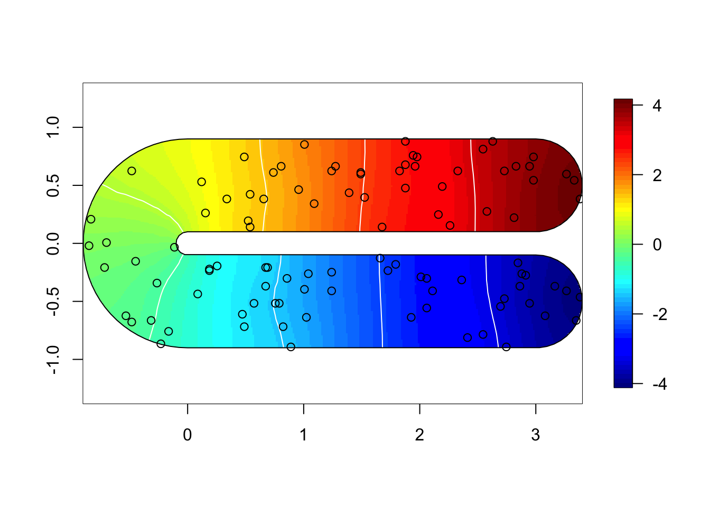

In this topic we use Ramsay’s horseshoe to compare the Barrier model to other solutions of the barrier problem.
We load the libraries and functions we need. You may need to install these libraries (Installation and general troubleshooting). Feel free to save the web location where the functions are defined as an R-file on your computer. We also set random seeds to be used later.
library(INLA)
library(mgcv)
library(fields)
library(rgeos)
set.seed(2016)N.loc = 100
# - number of locations
# - 100 in the soap-film paper (Wood)
sigma.eps = 0.1
# - measurement noise
# - Wood uses 0.1, 1, and 10
global.zlim=c(-1, 1)*4.3mgcv library ?fs.test## plot the function, and its boundary...
fsb <- fs.boundary()
m<-300;n<-150
xm <- seq(-1,4,length=m);yn<-seq(-1,1,length=n)
xx <- rep(xm,n);yy<-rep(yn,rep(m,n))
tru = fs.test(xx,yy, b = 1)
tru.matrix <- matrix(tru,m,n) ## truth
image.plot(xm,yn,tru.matrix,xlab="x",ylab="y", asp=1)
lines(fsb$x,fsb$y,lwd=3)
contour(xm,yn,tru.matrix,levels=seq(global.zlim[1], global.zlim[2],len=20),add=TRUE, col="white", drawlabels = F)
range(tru, na.rm = T)## [1] -4.2 4.2dat = data.frame(y = tru, locx = xx, locy=yy)
dat = dat[!is.na(dat$y), ]
df = dat[sample(1:nrow(dat), size=N.loc) ,]
df$y = df$y + rnorm(N.loc)*sigma.eps
str(df)## 'data.frame': 100 obs. of 3 variables:
## $ y : num -2.554 -3.616 2.817 -1.618 -0.993 ...
## $ locx: num 1.726 2.863 2.194 1.007 0.087 ...
## $ locy: num -0.235 -0.369 0.49 -0.396 -0.436 ...summary(df)## y locx locy
## Min. :-4.2 Min. :-0.8 Min. :-0.89
## 1st Qu.:-1.9 1st Qu.: 0.5 1st Qu.:-0.42
## Median :-0.2 Median : 1.5 Median :-0.16
## Mean : 0.0 Mean : 1.4 Mean : 0.00
## 3rd Qu.: 2.5 3rd Qu.: 2.5 3rd Qu.: 0.53
## Max. : 4.3 Max. : 3.4 Max. : 0.88p = Polygon(cbind(fsb$x, fsb$y))
p = Polygons(list(p), ID = "none")
poly = SpatialPolygons(list(p))
plot(poly)
points(df$locx, df$locy)
axis(1); axis(2)
max.edge = 0.2
bound.outer = 1.5
mesh = inla.mesh.2d(boundary = poly,
loc=cbind(df$locx, df$locy),
max.edge = c(1,5)*max.edge,
#cutoff = 0.1,
cutoff = 0.04,
# 0.1 is fast and bad, 0.04 ok?
offset = c(max.edge, bound.outer))
plot(mesh, main="Our mesh", lwd=0.5)
mesh$n## [1] 750A.i.s = inla.spde.make.A(mesh, loc=cbind(df$locx, df$locy))
stk = inla.stack(data=list(y=df$y),
effects=list(s=1:mesh$n,
m = rep(1, nrow(df))),
A=list(A.i.s, 1),
remove.unused = FALSE, tag='est') To set up the stationary spatial model, we first define the spatial Model Component.
prior.range = c(1, .5)
prior.sigma = c(3, 0.01)
spde = inla.spde2.pcmatern(mesh, prior.range=prior.range, prior.sigma=prior.sigma)
# - We put the prior median at approximately 0.5*diff(range(df$locy))
# - - this is roughly the extent of our study area
# - The prior probability of marginal standard deviation 3 or more is 0.01.Then we define the formula.
M = list()
M[[1]] = list(shortname="stationary-model")
M[[1]]$formula = y~ -1+m + f(s, model=spde)First we divide up the mesh accoring to our study area polygon.
tl = length(mesh$graph$tv[,1])
# - the number of triangles in the mesh
posTri = matrix(0, tl, 2)
for (t in 1:tl){
temp = mesh$loc[mesh$graph$tv[t, ], ]
posTri[t,] = colMeans(temp)[c(1,2)]
}
posTri = SpatialPoints(posTri)
# - the positions of the triangle centres
normal = over(poly, SpatialPoints(posTri), returnList=T)
# - checking which mesh triangles are inside the normal area
barrier.tri = setdiff(1:tl, unlist(normal))
# - the triangles inside the barrier area
poly.barrier = inla.barrier.polygon(mesh, barrier.triangles = barrier.tri)
plot(poly.barrier, col="grey", main="The barrier region (in grey)")
barrier.model = inla.barrier.pcmatern(mesh, barrier.triangles = barrier.tri, prior.range = prior.range, prior.sigma = prior.sigma)
# - Set up the inla model, including the matrices for solving the SPDEM[[2]] = list(shortname="barrier-model")
M[[2]]$formula = y~ -1+m + f(s, model=barrier.model)This is similar to FELSPLINE, as it uses the Neumann boundary condition!
mesh2 = inla.mesh.2d(boundary=poly,
max.edge = max.edge,
#cutoff = 0.1,
cutoff = 0.04)
plot(mesh2, main="The second mesh", lwd=0.5)
mesh2$n## [1] 504A.i.s2 = inla.spde.make.A(mesh2, loc=cbind(df$locx, df$locy))
stk2 = inla.stack(data=list(y=df$y),
effects=list(s=1:mesh2$n,
m = rep(1, nrow(df))),
A=list(A.i.s2, 1),
remove.unused = FALSE, tag='est') To set up the stationary spatial model, we first define the spatial Model Component.
spde2 = inla.spde2.pcmatern(mesh2, prior.range=prior.range, prior.sigma=prior.sigma)Then we define the formula.
M[[3]] = list(shortname="neumann-model")
M[[3]]$formula = y~ -1+m + f(s, model=spde2)
M[[3]]$stack = stk2Set up the initial values.
## Initial values
# - speeds up computations
# - improves accuracy of computations
# - set these to NULL the first time you run the model
M[[1]]$init = c(4.942,1.006,0.851)
M[[2]]$init = c(4.511,0.521,2.391)
M[[3]]$init = NULLNext, we run the inference for the our models. Note that this can take up to 30 minutes!
hyper.iid = list(prec = list(prior = 'pc.prec', param = prior.sigma))
# - use the same prior for noise sigma and spatial field sigma
start.time <- Sys.time()
for (i in 1:length(M)){
print(paste("Running: ", M[[i]]$shortname))
stack = stk
if (!is.null(M[[i]]$stack)) stack = M[[i]]$stack
M[[i]]$res = inla(M[[i]]$formula,
data=inla.stack.data(stack),
control.predictor=list(A=inla.stack.A(stack)),
family="gaussian",
control.family = list(hyper = hyper.iid),
#control.family = list(hyper = hyper.fixed),
control.inla= list(int.strategy = "eb"),
#verbose=T,
control.mode=list(restart=T, theta=M[[i]]$init))
}## [1] "Running: stationary-model"
## [1] "Running: barrier-model"
## [1] "Running: neumann-model"end.time <- Sys.time()
time.taken <- end.time - start.time
# - time: ca 1 minThe initial values that we set M[[i]]$init:
for (i in 1:length(M)){
print(paste(round(M[[i]]$res$internal.summary.hyperpar$mode, 3), collapse = ','))
}## [1] "4.817,0.935,0.837"
## [1] "4.738,0.49,2.389"
## [1] "4.394,2.375,-0.196"summary(M[[1]]$res)##
## Call:
## c("inla.core(formula = formula, family = family, contrasts =
## contrasts, ", " data = data, quantiles = quantiles, E = E,
## offset = offset, ", " scale = scale, weights = weights,
## Ntrials = Ntrials, strata = strata, ", " lp.scale = lp.scale,
## link.covariates = link.covariates, verbose = verbose, ", "
## lincomb = lincomb, selection = selection, control.compute =
## control.compute, ", " control.predictor = control.predictor,
## control.family = control.family, ", " control.inla =
## control.inla, control.fixed = control.fixed, ", " control.mode
## = control.mode, control.expert = control.expert, ", "
## control.hazard = control.hazard, control.lincomb =
## control.lincomb, ", " control.update = control.update,
## control.lp.scale = control.lp.scale, ", " control.pardiso =
## control.pardiso, only.hyperparam = only.hyperparam, ", "
## inla.call = inla.call, inla.arg = inla.arg, num.threads =
## num.threads, ", " blas.num.threads = blas.num.threads, keep =
## keep, working.directory = working.directory, ", " silent =
## silent, inla.mode = inla.mode, safe = FALSE, debug = debug, ",
## " .parent.frame = .parent.frame)")
## Time used:
## Pre = 3.32, Running = 0.799, Post = 0.0349, Total = 4.15
## Fixed effects:
## mean sd 0.025quant 0.5quant 0.97quant mode kld
## m 0.28 1.4 -2.4 0.28 2.9 0.28 0
##
## Random effects:
## Name Model
## s SPDE2 model
##
## Model hyperparameters:
## mean sd 0.025quant
## Precision for the Gaussian observations 134.55 81.660 34.20
## Range for s 2.73 0.627 1.78
## Stdev for s 2.46 0.502 1.68
## 0.5quant 0.97quant mode
## Precision for the Gaussian observations 116.10 329.44 82.80
## Range for s 2.64 4.15 2.43
## Stdev for s 2.39 3.58 2.22
##
## Marginal log-Likelihood: -101.22
## is computed
## Posterior summaries for the linear predictor and the fitted values are computed
## (Posterior marginals needs also 'control.compute=list(return.marginals.predictor=TRUE)')summary(M[[2]]$res)##
## Call:
## c("inla.core(formula = formula, family = family, contrasts =
## contrasts, ", " data = data, quantiles = quantiles, E = E,
## offset = offset, ", " scale = scale, weights = weights,
## Ntrials = Ntrials, strata = strata, ", " lp.scale = lp.scale,
## link.covariates = link.covariates, verbose = verbose, ", "
## lincomb = lincomb, selection = selection, control.compute =
## control.compute, ", " control.predictor = control.predictor,
## control.family = control.family, ", " control.inla =
## control.inla, control.fixed = control.fixed, ", " control.mode
## = control.mode, control.expert = control.expert, ", "
## control.hazard = control.hazard, control.lincomb =
## control.lincomb, ", " control.update = control.update,
## control.lp.scale = control.lp.scale, ", " control.pardiso =
## control.pardiso, only.hyperparam = only.hyperparam, ", "
## inla.call = inla.call, inla.arg = inla.arg, num.threads =
## num.threads, ", " blas.num.threads = blas.num.threads, keep =
## keep, working.directory = working.directory, ", " silent =
## silent, inla.mode = inla.mode, safe = FALSE, debug = debug, ",
## " .parent.frame = .parent.frame)")
## Time used:
## Pre = 2.85, Running = 2.99, Post = 0.0348, Total = 5.88
## Fixed effects:
## mean sd 0.025quant 0.5quant 0.97quant mode kld
## m 3.3 2.6 -1.8 3.3 8.2 3.3 0
##
## Random effects:
## Name Model
## s RGeneric2
##
## Model hyperparameters:
## mean sd 0.025quant
## Precision for the Gaussian observations 118.41 30.742 69.52
## Theta1 for s 0.54 0.326 -0.07
## Theta2 for s 2.44 0.357 1.78
## 0.5quant 0.97quant mode
## Precision for the Gaussian observations 114.526 185.95 107.089
## Theta1 for s 0.529 1.19 0.483
## Theta2 for s 2.432 3.15 2.381
##
## Marginal log-Likelihood: 15.26
## is computed
## Posterior summaries for the linear predictor and the fitted values are computed
## (Posterior marginals needs also 'control.compute=list(return.marginals.predictor=TRUE)')summary(M[[3]]$res)##
## Call:
## c("inla.core(formula = formula, family = family, contrasts =
## contrasts, ", " data = data, quantiles = quantiles, E = E,
## offset = offset, ", " scale = scale, weights = weights,
## Ntrials = Ntrials, strata = strata, ", " lp.scale = lp.scale,
## link.covariates = link.covariates, verbose = verbose, ", "
## lincomb = lincomb, selection = selection, control.compute =
## control.compute, ", " control.predictor = control.predictor,
## control.family = control.family, ", " control.inla =
## control.inla, control.fixed = control.fixed, ", " control.mode
## = control.mode, control.expert = control.expert, ", "
## control.hazard = control.hazard, control.lincomb =
## control.lincomb, ", " control.update = control.update,
## control.lp.scale = control.lp.scale, ", " control.pardiso =
## control.pardiso, only.hyperparam = only.hyperparam, ", "
## inla.call = inla.call, inla.arg = inla.arg, num.threads =
## num.threads, ", " blas.num.threads = blas.num.threads, keep =
## keep, working.directory = working.directory, ", " silent =
## silent, inla.mode = inla.mode, safe = FALSE, debug = debug, ",
## " .parent.frame = .parent.frame)")
## Time used:
## Pre = 3.31, Running = 0.731, Post = 0.0291, Total = 4.07
## Fixed effects:
## mean sd 0.025quant 0.5quant 0.97quant mode kld
## m 4.3 0.11 4.1 4.3 4.5 4.3 0
##
## Random effects:
## Name Model
## s SPDE2 model
##
## Model hyperparameters:
## mean sd 0.025quant
## Precision for the Gaussian observations 83.148 16.306 55.999
## Range for s 12.621 4.299 7.061
## Stdev for s 0.936 0.275 0.563
## 0.5quant 0.97quant mode
## Precision for the Gaussian observations 81.459 118.10 78.046
## Range for s 11.686 22.88 9.884
## Stdev for s 0.881 1.58 0.768
##
## Marginal log-Likelihood: 26.56
## is computed
## Posterior summaries for the linear predictor and the fitted values are computed
## (Posterior marginals needs also 'control.compute=list(return.marginals.predictor=TRUE)')To understand how well the computations of the posterior worked, we look at the logfiles.
#M[[i]]$res$logfilelocal.plot.field = function(field, mesh, xlim, ylim, zlim, n.contours=10, ...){
stopifnot(length(field) == mesh$n)
# - error when using the wrong mesh
if (missing(xlim)) xlim = poly@bbox[1, ]
if (missing(ylim)) ylim = poly@bbox[2, ]
# - choose plotting region to be the same as the study area polygon
proj = inla.mesh.projector(mesh, xlim = xlim,
ylim = ylim, dims=c(300, 300))
# - Can project from the mesh onto a 300x300 grid
# for plots
field.proj = inla.mesh.project(proj, field)
# - Do the projection
if (missing(zlim)) zlim = range(field.proj)
image.plot(list(x = proj$x, y=proj$y, z = field.proj),
xlim = xlim, ylim = ylim, asp=1, ...)
contour(x = proj$x, y=proj$y, z = field.proj,levels=seq(zlim[1], zlim[2],length.out = n.contours),add=TRUE, drawlabels=F, col="white")
# - without contours it is very very hard to see what are equidistant values
}for (i in 1:3) {
field = M[[i]]$res$summary.random$s$mean + M[[i]]$res$summary.fixed['m', 'mean']
if (i %in% c(1,2)) {
local.plot.field(field, mesh, main=paste(), zlim=global.zlim)
} else {
local.plot.field(field, mesh2, zlim=global.zlim)
}
plot(poly.barrier, add=T, border="black", col="white")
points(df$locx, df$locy)
}
## Truth on the grid
summary(dat)## y locx locy
## Min. :-4.2 Min. :-0.9 Min. :-0.89
## 1st Qu.:-2.0 1st Qu.: 0.2 1st Qu.:-0.48
## Median : 0.1 Median : 1.3 Median : 0.00
## Mean : 0.1 Mean : 1.3 Mean : 0.00
## 3rd Qu.: 2.1 3rd Qu.: 2.3 3rd Qu.: 0.48
## Max. : 4.2 Max. : 3.4 Max. : 0.89## Remember
# M[[1]] is the stationary, M[[2]] is the barrier model
A.grid = inla.spde.make.A(mesh, loc=cbind(dat$locx, dat$locy))
for (i in 1:3) {
if (i==3) {
## Different mesh for neumann model
A.grid = inla.spde.make.A(mesh2, loc=cbind(dat$locx, dat$locy))
}
M[[i]]$est = drop(A.grid %*% M[[i]]$res$summary.random$s$mean) +
M[[i]]$res$summary.fixed["m", "mean"]
M[[i]]$rmse = sqrt(mean((M[[i]]$est-dat$y)^2))
M[[i]]$mae = mean(abs(M[[i]]$est-dat$y))
M[[i]]$mae.sd = sd(abs(M[[i]]$est-dat$y))/sqrt(length(M[[i]]$est))
}
## Display results
data.frame(name=unlist(lapply(M, function(x) c(x$shortname))),
rmse=unlist(lapply(M, function(x) c(x$rmse))),
mae=unlist(lapply(M, function(x) c(x$mae))),
mae.sd=unlist(lapply(M, function(x) c(x$mae.sd))))## name rmse mae mae.sd
## 1 stationary-model 0.346 0.191 0.00169
## 2 barrier-model 0.075 0.057 0.00028
## 3 neumann-model 0.152 0.056 0.00082
11 Comments and additional
11.1 Related topics
Both BTopic103 and BTopic107 is relevant to the current topic.
11.2 References